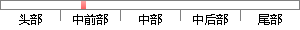

而且多种选择工具还可以结合起来选择、制作多种较为复杂的图像。
降重后句子
各种选择工具也可以组合起来选择和生成各种更复杂的图像。
片段位置图

相似结果|
相似片段 1：选择不同的主视方向，在同一张图纸上生成各种比例的各种视图组合，学生对各种视图表达方案的优点缺点一目了然，很容易就掌握了这一部分知识，节约的时间可以让学生做更多的视图表达方案练习。Inventor在生成
相似片段 2：提取复杂的对象。Photoshop 通道主要是将图像的颜色信息进行存放，可以使各种颜色组成各种选择范围，通道实际上就是一种选区，可以利用通道选择白色，舍弃掉黑色。利用通道，将具备色阶的图像进行处理，可
|
※ 片段修改建议 ※
近似词参考：- 各种：各类 种种
- 工具：东西 对象
- 生成：天生
- 各种：各类 种种
- 复杂：庞大 繁杂
- 图像：图象
系统自动生成语句：各类选择东西也可以组合起来选择和天生各类更庞大的图象。
注：本片段修改建议为系统自动生成，仅供参考。